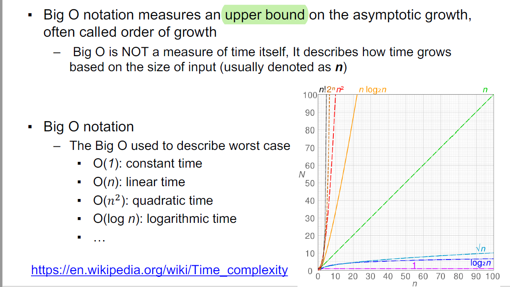
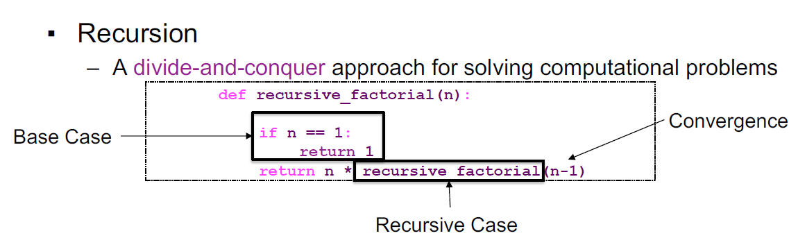
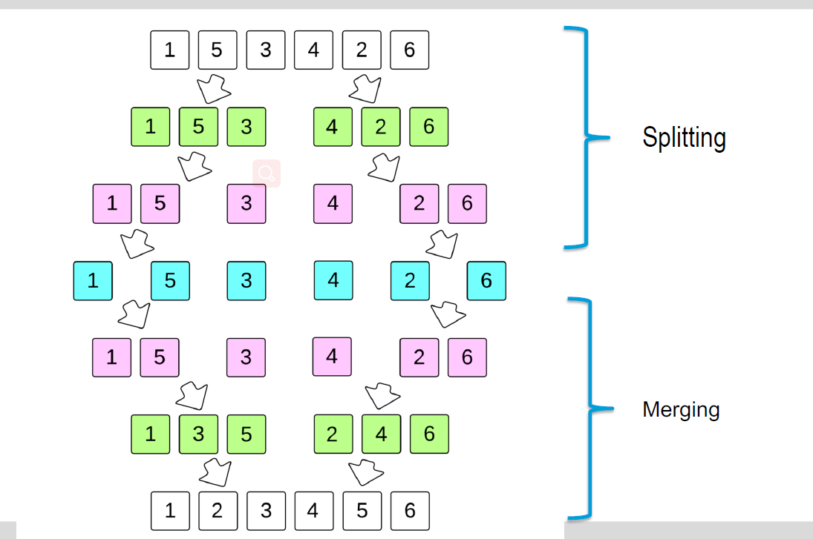
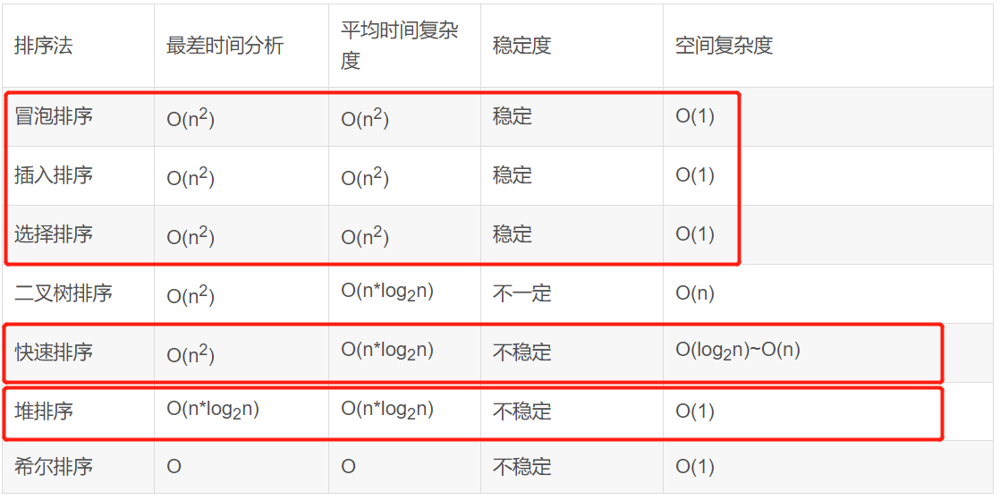

Searching
Time complexity
▪ Big O notation measures an upper bound on the asymptotic
growth, often called order of growth.
-----Each computational step counts as 1. Whenever we say just O(n), that is saying the worst case
▪ O(1), O(n), O(𝑛!), O(log n), O( 𝑛), O(nn), …

▪ Focus on dominant terms!
Searching
– A process of finding a particular data item (or a group of data items)
within a sequence-based collection based on certain criteria
–----Linear search: search one by one from left to right
–----Binary search (sorted list): divide to two list and compare with
middle …
▪ Sorting
– A process of re-ordering or re-arranging data items within a
collection based on certain characteristics/attributes
– Bubble sort: swap adjacent pair of items to keep the order
一轮中，所有相邻的两个将大的放右边，也就是说，每一轮都能确定最右边的最大的一个
– Selection sort: select smallest/largest item in each iteration and
place it in the correct order
每一次都说选择最小的数，放到最左边
– Insertion sort: pick the item from unsorted list to correct position in
sorted list 等于再弄一个序列，一个个数据按正确位置插入新序列数据中
Recursion
A function that calls itself repeatedly.
– A divide-and-conquer approach for solving computational problems

▪ Recursive Sorting
– Merge sort: split and merge, O(n*log(n))

– Quick sort: pivot and swap O(n*log(n)
第一步：选一个数，比这个数小的交换到左边，大的交换到右边
第二步：然后再把比这个数小的序列和比这个数大的序列（两个序列）分别采取第一步中的方法
Conclusion
